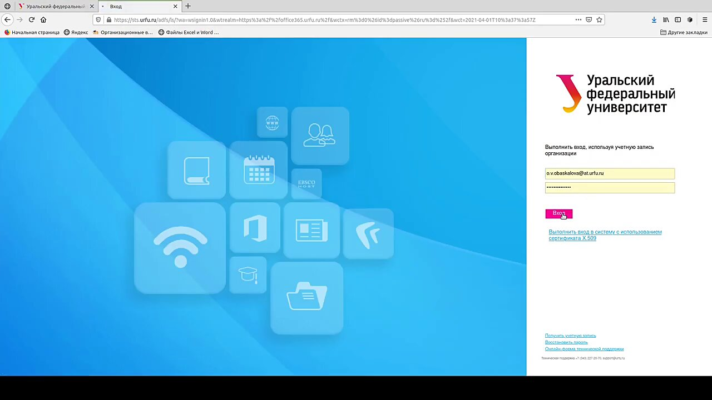
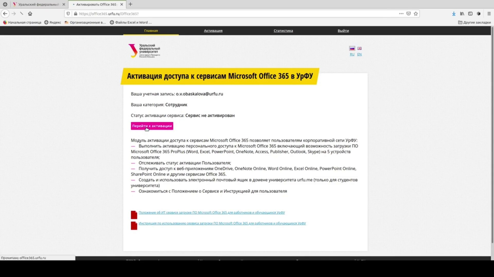
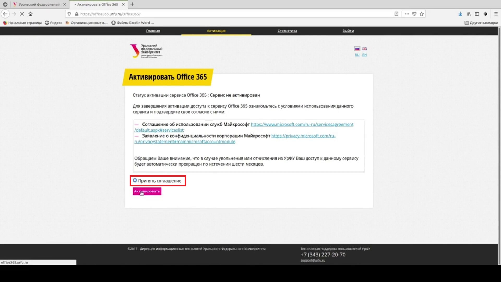
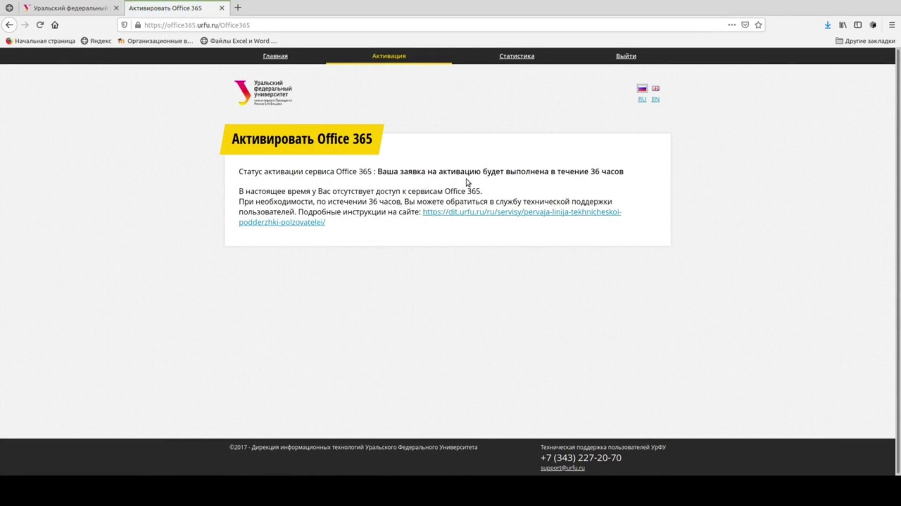
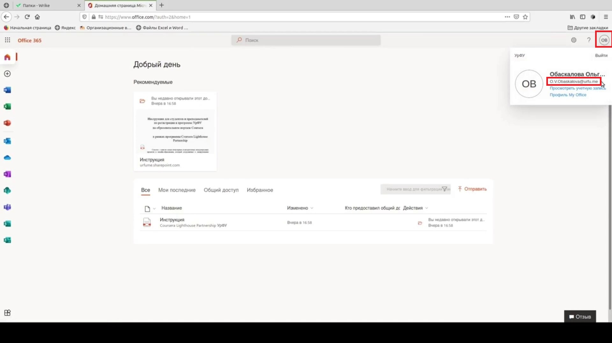
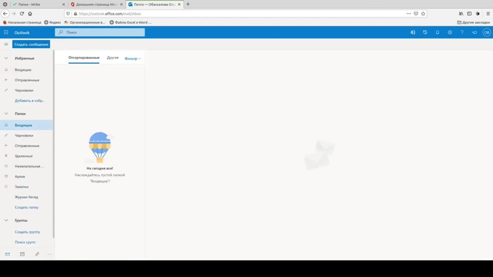

Перейдите на сайт https://office365.urfu.ru. Выполните вход, используя логин и пароль от личного кабинета УрФУ.
Нажмите на кнопку «Перейти к активации».
Ознакомьтесь с документами, регламентирующими работу сервиса, примите соглашение об использовании служб и нажмите на кнопку «Активировать».
В течение тридцати шести часов ваша заявка на активацию доступа будет выполнена. После этого Вам будет открыт доступ к корпоративному почтовому ящику в домене urfu.ru.
Для того чтобы узнать свой почтовый адрес, зарегистрированный в домене urfu.me, нажмите пиктограмму аватара в правом верхнем углу страницы. Откроется пункт меню «Мои учетные записи». Справа от пиктограммы аватара Вы сможете увидеть адрес своей электронной почты.
Для использования корпоративной электронной почты откройте приложение Outlook. На этом создание корпоративного почтового ящика для обучающихся УрФУ завершено.
